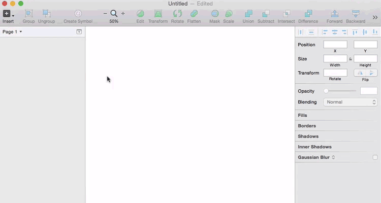
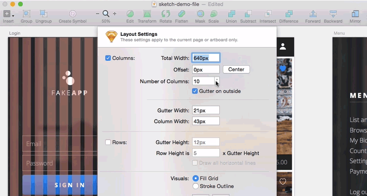
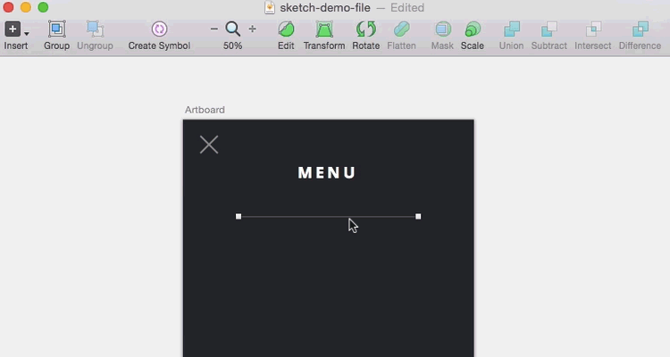
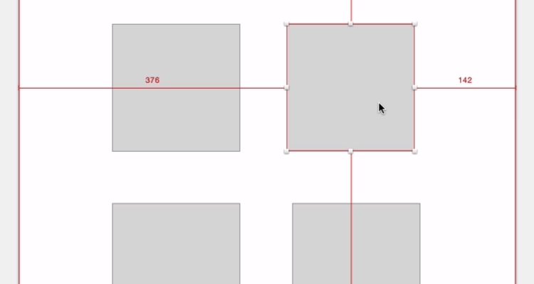
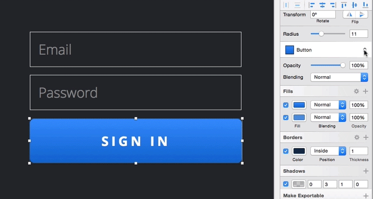
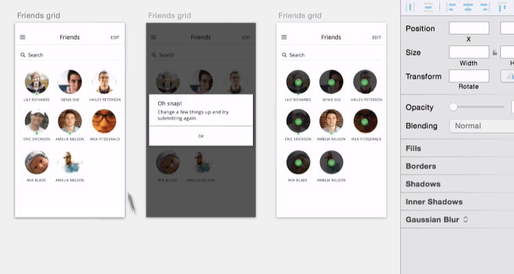
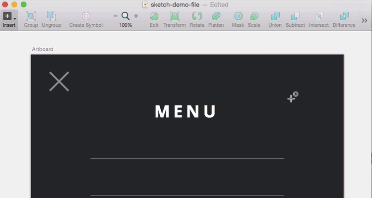
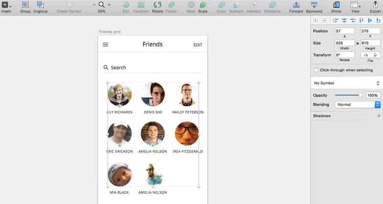
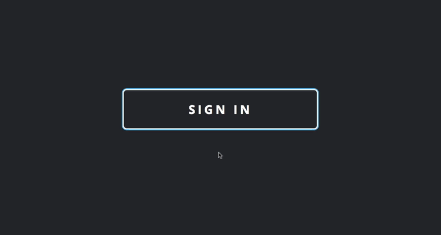
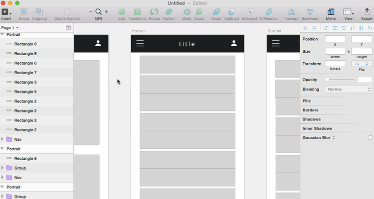

用 sketch 做原型设计的 11 个技巧
The fine folks over at Bohemian Coding built Sketch specifically for designers who make things for screens, so it’s a natural for prototyping.
Bohemian公司的优秀工程师们开发的 Sketch 是给设计师用的。所以，该软件自然可以用来做原型设计。
Here are a few tips for using Sketch to prototype that should make things smoother, faster, and easier for ya.
这里是一些使用 Sketch 做原型设计和让你的工作更顺畅、快速、简单的技巧。
1. Size your artboards right
调整 artboards 到合适的大小

Okay, okay—this might not be the most mind-blowing tip on the list, but it’s helpful and important. Sketch provides a lot of predefined artboards to get you started right. Just type A and pick the artboard you need.
好，好---也许这不是这些技巧中最令人印象深刻的技巧，但是它有用而且重要。Sketch 提供很多预定义的 artboards 帮你正确的开始。只需要按字母A，然后选择你想要的 artboard。
2. Get your grid on
打开网格

Sketch makes it super easy to set up a layout that works for you. Just go to View > Layout Settings… to configure your layout, or press Ctrl+L to view your default layout.
Sketch 设置布局超级简单。在菜单栏选择 显示 > 画布 > 布局设置 来配置你的布局。然后使用 Ctrl + L 快捷键来查看你的布局。
3. Duplicate anything in seconds
秒级复制

I’ve used this trick in Illustrator for years, and it’s the same in Sketch. If you hold Option, then click and drag an element, it will copy it. Once you’ve placed it, just hit Cmd+D to do it again and again.
多年前我在 Illustrator 中使用这个技巧，Sketch 一样的使用方法。按住 Option，然后拖拽一个元素，Sketch 将复制它。把复制的元素松手后，不断按 Cmd+D 将复制出一个个重复元素。
Note: If this doesn't work as shown above, go to Preferences > Layers and uncheck Offset pasted
& duplicated objects
4. Measure distances
测量距离

If you want to make beautiful things, you have to be intentional about details. To measure an element’s distance from other items on the page, select it on screen and hold Option. Then get ready to feel really OCD.
如果你想让事物更漂亮，你不得不注意细节。为了测量两个元素之间的距离，只要在屏幕上选择一个元素，然后按住 Option 。准备去感受自己的强迫症吧。
5. Use shared styles now, thank yourself later
现在就使用共享样式，之后你会感谢自己的

You’re 100 screens in, on your 3rd round of reviews. The finish line is in sight. And then your client says, “Can we change all the buttons to blue?”
你做了100个页面给你的客户检查。截止日期就在眼前。然而，你的客户说，“能否把按钮颜色都改为蓝色？”
Instead of flipping your table, you just say “Ok”—because you used shared styles on all those buttons. When you’re creating UI elements you’ll use again and again, set their style by clicking No Shared Style, then Create New Shared Style, and give it a memorable name.
你不用骂娘翻桌子，可以轻松的说“没问题”。因为你使用了共享样式在所有的按钮上。当你创建的元素将被使用多次，给它们设置共享样式吧。
6. Totally abuse symbols

Symbols are a really helpful aspect of Sketch—and while what I propose here is probably an abuse of them, it’s pretty much invaluable.
If you’ve got a screen with a lot of states, modals, or options that go on top of it, make that whole screen a symbol, duplicate the artboard, and create your alternate versions. This way, if you need to update the underlying screen, you won’t be kicking yourself when you have to change all those other versions, too.
7. Move shapes while you draw them

This tip is just super practical. When you’re drawing a shape (say, a circle), it’s tough to get the placement just right on the first go. But if you hold the spacebar while drawing, you can move your shape as you create it, then continue sizing it before committing it to your artboard.
8. Change opacity on the fly

This works just like it does in Photoshop, but a lot of people still don’t know about it. Use the number keys (1–0) on your keyboard to set opacity levels in 10% intervals.
9. Save frustration with “Scale”

We all make mistakes—let’s say you designed a button, but made it way too big. You’ve got a border radius of 20px and a 4px outline. If you just drag the corner to shrink it, you’re going to be unhappy with the result. So instead, click Scale and resize to the dimensions you need.
10. Maximize your workspace
最大化你的工作区

If you’re working on a smaller screen, just about any app can start to feel cramped, and Sketch is no exception. To hide the left and right panels, press Ctrl+Option+Cmd+3. Or, show / hide the left and right panels individually with Ctrl+Option+Cmd+1 or Ctrl+Option+Cmd+2.
如果你在小屏上工作，使用任何软件都会感觉狭小，使用 Sketch 也不例外。隐藏左右两边的面板，按 Ctrl+Option+3。或者，显示/隐藏 左边和右边的面板，分别按 Ctrl+Option+Cmd+1 和 Ctrl+Option+Cmd+2。
11. Drop Sketch files into InVision
让 Sketch 文件不可见
Handily, you can drop Sketch files right into InVision to automatically turn your artboards into screens. If you want to exclude a certain artboard or page, just add a minus sign in front of the layer or page name, like so: “-modal exploration”
你可以非常方便直接让 Sketch 文件不可见，以自动转换画板为屏幕。如果你想要排除一个特定的画板或者页面，只要添加减号到图层或页面名的前面。像这样："-modal exploration" （没有试验成功~）